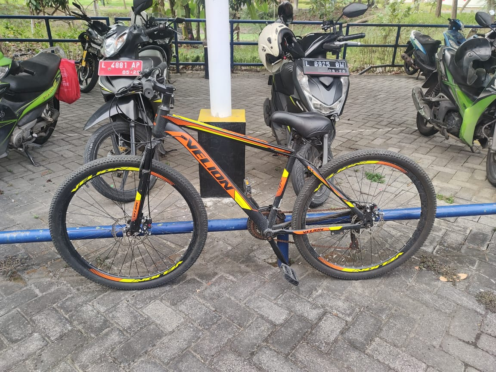
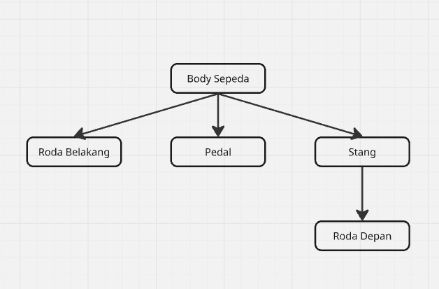

Kontrol Sepeda 3D
Cahaya
Ambient
Diffuse
Specular
Posisi Cahaya X
Posisi Cahaya Y
Posisi Cahaya Z
Rotasi
Rotasi X
Rotasi Y
Rotasi Z
Posisi
Geser X
Geser Y
Geser Z
Skala
Skala
Kamera
Kamera X
Kamera Y
Kamera Z
Reset
Kontrol Sepeda
Kecepatan Pedal
Steer / Stir
Animasi ON
Referensi Sepeda

gambar tree

Hierarki Sepeda
Parent: Body Sepeda
Child: Stang (sib: Roda Belakang, Pedal)
Child: Roda Belakang (sib: Stang, Pedal)
Child: Pedal (sib: Stang, Roda Belakang)
Stang → Child: Roda Depan